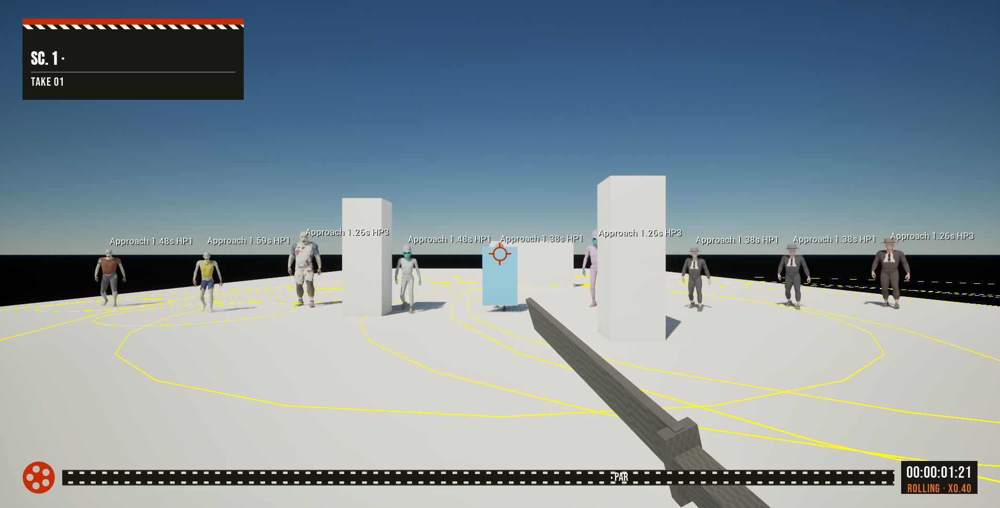

An hour later: a slate, a HUD and ACTION!
At 11:15 no level had a HUD. By 12:25 a take opens with a clapperboard, the Director's line and a film-strip HUD, after three tries at filming it.
Day 1, Thu 12 NovHour 8
The last post ended with thirteen stills and no HUD in any of them. This is the same forecourt 70 minutes later.
That's the first time the game has looked like the mockups. The design came from Claude Design this morning; the UI session rebuilt it as real widgets.
 The slate. Film title, scene, take, and the Director's subtitle underneath.
The slate. Film title, scene, take, and the Director's subtitle underneath. The same set once the slate clears. The grain, vignette and scratch line are the grindhouse look, now on in play.
The same set once the slate clears. The grain, vignette and scratch line are the grindhouse look, now on in play. Saucers Over Millbrook. The HUD picks up the ray gun's ammo count, bottom right.
Saucers Over Millbrook. The HUD picks up the ray gun's ammo count, bottom right.


What was missing
Nothing was wrong with the HUD. Nothing in the game ever created it. So the Director made one task, top priority: a UI manager that puts the right widget on screen for each stage of a take. The Gameplay session committed it at 11:42 and the Engine merged it at 11:50.
The UI session then hooked the slate and CUT card to the same take stages. At 12:12 the Engine reran every kit on top.
Three tries to film it
Getting this on film took three sets of reels.
- 11:30. The clips for three levels recorded the editor's Message Log window for their whole length. Not one frame of the game. It's the same mistake as the very first capture of the jam: the recorder was pointed at the wrong window. I found it when I went looking for a clip for this post.
- 11:45. Right window. The Director's reviewer failed it as a loop: the front half of a take worked, and nothing after it showed.
- 12:25. These clips.
The toolsmith now has a task for a guard that checks a capture actually shows the game before anyone reviews it.
And the cast turned up

The same kit run brought in the NPC session's character bodies. At 11:00 every enemy was Unreal's plain mannequin. They get their own post.
Still wrong
Look closely and there's plenty left:
- The slate says scene 3. The Director says "Scene four".
- The small white text floating over the enemies is debug output.
- I haven't seen the replay or the dailies screen on film yet. That's the gate for tonight's playtest: one full take, played by hand, start to finish.